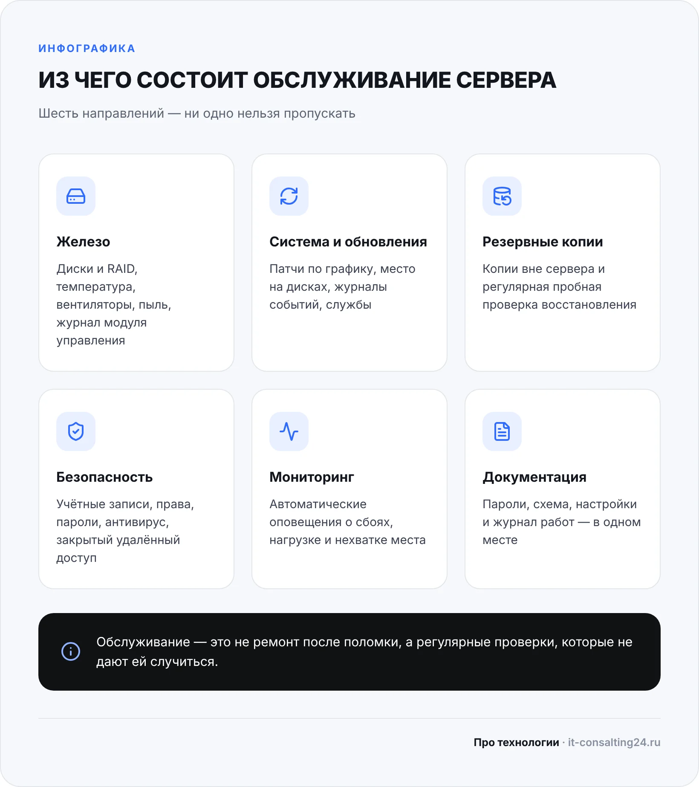
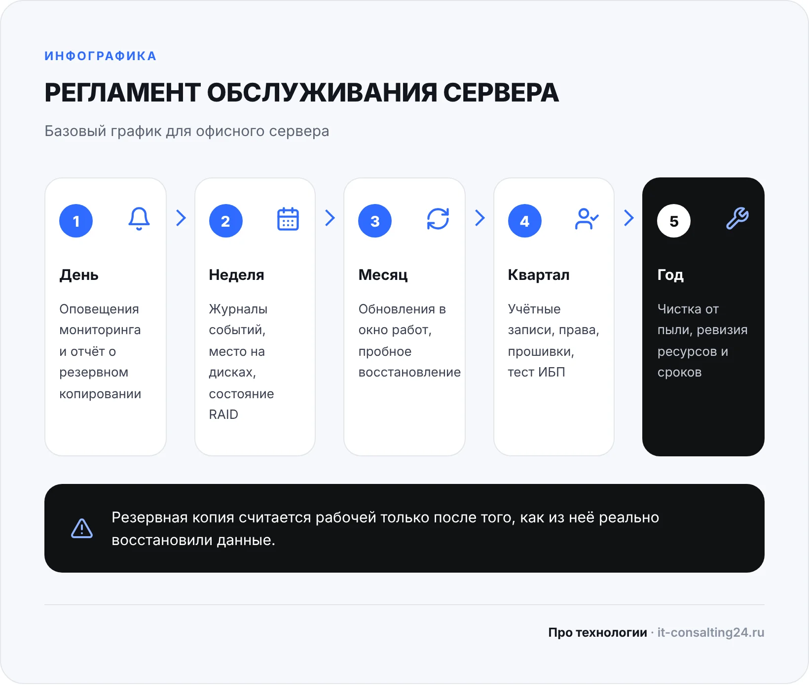

Обслуживание серверов — это регулярные проверки и профилактика, которые не дают серверу остановиться внезапно. Сервер в офисе обычно незаметен: стоит в углу или в шкафу и работает. О нём вспоминают, когда 1С не открывается, общие папки пропали, а бухгалтерия сидит без дела. Почти всегда у такой остановки были признаки за недели до неё: диск в массиве уже выпал, место заканчивалось, резервная копия давно не делалась. Их просто никто не смотрел.
Ниже разберём простым языком, что входит в обслуживание сервера, как часто что делать, чем отличается плановая работа от аварийной, кто может этим заниматься и как проверить, что подрядчик действительно обслуживает сервер, а не только берёт абонентскую плату. В конце — таблица типичных проблем, чек-лист и ответы на частые вопросы.
Зачем серверу регулярное обслуживание
Сервер работает круглосуточно и обслуживает всех сотрудников сразу. На нём живут 1С, общие документы, учётные записи, иногда терминальный доступ и почта. Поэтому любая его остановка — это не неудобство одного человека, а простой всего офиса.
У серверного оборудования есть запас надёжности: RAID-массив переживает поломку одного диска, ИБП — короткое отключение света, модуль удалённого управления позволяет перезагрузить зависший сервер без выезда. Но этот запас работает, только если за ним следят. Если диск в RAID вышел из строя и его не заменили, массив продолжает работать уже без защиты — и следующий отказ уносит данные. Если батареи ИБП состарились, при отключении света сервер просто выключится, как обычный компьютер.
Регулярное обслуживание решает три задачи:
- предупреждает сбои — проблемы видны заранее, их чинят в удобное время, а не в разгар рабочего дня;
- сохраняет данные — резервные копии делаются и проверяются, доступ к серверу защищён;
- продлевает жизнь оборудованию — сервер не перегревается, не забивается пылью, нагрузка не растёт бесконтрольно.
Что входит в обслуживание сервера
Обслуживание серверов складывается из шести направлений. Если какое-то выпадает, остальные не спасают: идеально обновлённый сервер без рабочих копий так же уязвим, как сервер с копиями, но с перегретыми дисками.
Железо
Состояние дисков и RAID-массива, температура процессоров и дисков, работа вентиляторов и блоков питания. В серверах есть модуль удалённого управления со своим журналом событий: ошибки памяти, питания и перегрева часто появляются там раньше, чем в операционной системе. Раз в год сервер чистят от пыли и проверяют, как он стоит: есть ли вентиляция, не перегревается ли помещение летом.
Операционная система и обновления
Установка обновлений безопасности по графику, контроль свободного места на дисках, просмотр журналов событий, проверка, что нужные службы запущены. Обновления ставят в заранее согласованное «окно» — вечером или в выходные — и только когда есть свежая резервная копия, к которой можно откатиться.
Резервные копии
Контроль, что копии создаются по расписанию, хранятся не только на самом сервере и из них можно восстановиться. Последнее — самое важное: копия, из которой ни разу не пробовали восстановить данные, может оказаться пустой или неполной. Подробно о том, что и куда копировать, — в статье о резервном копировании для малого бизнеса.
Безопасность и доступ
Учётные записи и права: у уволенных сотрудников доступ закрыт, у каждого — только то, что нужно для работы. Надёжные пароли администратора, антивирус, закрытый извне удалённый доступ — не напрямую из интернета, а через VPN. Это основная защита от взлома и шифровальщиков.
Мониторинг
Программа, которая сама следит за сервером и присылает оповещение, если диск выпал из массива, место кончается, служба остановилась или сервер не отвечает. Без мониторинга администратор узнаёт о проблеме от сотрудников — то есть когда она уже случилась.
Документация
Где лежат пароли, как настроен сервер, какие программы и лицензии на нём стоят, что и когда меняли. Это нужно не для галочки: если администратор заболел или вы сменили подрядчика, без документации новый специалист неделями разбирается, как всё устроено.

Регламент: что и как часто делать
Регламент — это список работ с периодичностью. Он нужен, чтобы обслуживание не зависело от памяти и настроения администратора, а вы могли проверить, что работы действительно выполняются. Ниже — базовый вариант для офисного сервера; под конкретную компанию его уточняют.
Ежедневно
- Просмотреть оповещения мониторинга, если они были.
- Убедиться, что ночное резервное копирование завершилось без ошибок.
Еженедельно
- Проверить журналы событий системы и журнал модуля управления сервером.
- Посмотреть свободное место на дисках и состояние RAID-массива.
- Проверить, что антивирус работает и его базы обновляются.
Ежемесячно
- Установить обновления системы и программ в согласованное окно работ.
- Сделать пробное восстановление: файла, базы 1С или целой виртуальной машины.
- Посмотреть, как меняется нагрузка: процессор, память, диски.
Раз в квартал
- Пройтись по учётным записям и правам доступа, закрыть лишнее.
- Проверить и при необходимости обновить прошивки сервера и контроллера дисков.
- Провести тест ИБП и проверить, что сервер корректно выключается при отключении питания.
- Проверить сроки сертификатов, лицензий и подписок, чтобы ничего не закончилось внезапно.
Раз в год
- Почистить сервер от пыли, проверить вентиляторы и условия в помещении.
- Оценить, хватает ли ресурсов на следующий год, и спланировать замену старых дисков, батарей ИБП и оборудования.
- Обновить документацию.

Плановое и аварийное, удалённое и выездное
Плановое обслуживание — всё, что есть в регламенте. Его делают по графику, предупредив сотрудников заранее, обычно вне рабочего времени. Аварийное — когда что-то уже сломалось: сервер не загружается, 1С не запускается, диск вышел из строя. Чем лучше выполняется плановая часть, тем реже нужна аварийная — и тем она короче, потому что есть копии, документация и понятно, что менялось.
Большую часть работ можно делать удалённо: обновления, журналы, резервные копии, права доступа, мониторинг. Через модуль удалённого управления администратор может даже перезагрузить зависший сервер и посмотреть, что происходит при загрузке. Выезд нужен для работы с железом: замена диска или блока питания, чистка, подключение нового оборудования, проблемы с сетью и питанием в серверной. Удобнее всего смешанный вариант: рутина — удалённо, железо — с выездом.
Особенности: сервер 1С, терминальный сервер, виртуализация
Для сервера 1С к общему списку добавляется обслуживание самих баз: регламентные операции СУБД (индексы, статистика), контроль размера баз и журналов, тестирование и исправление информационных баз по необходимости, обновление платформы и конфигураций с предварительной копией. Если 1С тормозит при нормальной загрузке сервера, причина часто именно в необслуживаемой базе. Подробнее о том, что мы делаем с серверами 1С, — на странице администрирования серверов 1С.
На терминальном сервере важно следить за количеством одновременных сессий, памятью и профилями пользователей: со временем они разрастаются и съедают место. При виртуализации нужно обслуживать не только виртуальные машины, но и сам хост. И помнить: снимок (snapshot) виртуальной машины — не резервная копия. Он лежит на том же хранилище и пропадёт вместе с ним.
Кто будет обслуживать сервер
Есть три основных варианта, и у каждого свои ограничения.
| Вариант | Кому подходит | Ограничения |
|---|---|---|
| Свой системный администратор | Компаниям, где много серверов и ежедневных задач для ИТ | Зарплата и налоги; когда сотрудник в отпуске или уволился, обслуживание останавливается |
| Разовые вызовы специалиста | Когда сервер один и простой, а нужно решить конкретную задачу | Никто не следит за сервером между вызовами — это ремонт, а не обслуживание |
| ИТ-аутсорсинг | Небольшим компаниям без своего ИТ-отдела | Нужен договор с понятным регламентом, сроками реакции и отчётами |
Если выбираете подрядчика, обратите внимание на несколько вещей. Есть ли у него регламент работ, а не только «звоните, если что». Есть ли мониторинг — то есть узнаёт ли он о проблемах сам. Какие сроки реакции прописаны в договоре и как работают выезды. И что вы получаете на руки: отчёт о выполненных работах и документацию по серверу. Подробно о выборе — в статье как выбрать ИТ-аутсорсинг.
Хороший отчёт по обслуживанию короткий и понятный: какие работы выполнены, что нашли, что исправили, какие есть риски и что рекомендуется сделать дальше — например, заменить диск, который начал выдавать ошибки, или докупить память.
Типичные проблемы с сервером и что с ними делать
| Проблема | Причина | Что сделать |
|---|---|---|
| 1С и общие папки стали работать медленно | Заканчивается место, выросла нагрузка, базы давно не обслуживались | Проверить место и нагрузку, провести регламентные операции с базами, при необходимости добавить ресурсы |
| Сервер пищит или горит индикатор на корпусе | Вышел из строя диск, вентилятор или блок питания | Посмотреть журнал модуля управления, заменить неисправный узел, не откладывая |
| После отключения света сервер не загрузился | Старые батареи ИБП, не настроено корректное выключение | Проверить ИБП, заменить батареи, настроить автоматическое выключение сервера |
| Резервной копии нужного дня нет | Копирование тихо остановилось, никто не проверял отчёты | Настроить оповещения об ошибках копирования и ежемесячную пробу восстановления |
| Сервер внезапно перезагружается | Перегрев, проблемы с питанием или памятью, автоматическая установка обновлений | Проверить температуру, журналы и настройки обновлений, почистить сервер от пыли |
| Бывший сотрудник может зайти на сервер | Учётные записи не отключают при увольнении | Ввести правило отключения доступа в день увольнения, раз в квартал проверять список |
| Никто не знает пароль администратора | Нет документации, пароли были у одного человека | Восстановить доступ, завести хранилище паролей и описание сервера |
Типичные ошибки при обслуживании
- Считать RAID резервной копией. RAID защищает от поломки диска, но не от удаления файлов, шифровальщика или ошибки в 1С.
- Хранить копии только на самом сервере. Если сервер зашифруют или он сгорит, копии пропадут вместе с ним. Подробнее — в статье о защите от шифровальщиков.
- Не обновлять систему годами «чтобы ничего не сломалось» — или, наоборот, ставить обновления днём без копии.
- Открывать удалённый рабочий стол напрямую в интернет ради удобства удалённой работы.
- Держать всё в голове одного администратора без документации и доступа у руководителя.
- Звать специалиста только когда всё сломалось — это ремонт, а не обслуживание серверов, и он почти всегда дороже.
Чек-лист: обслуживается ли ваш сервер
Ответьте «да» или «нет». Каждое «нет» — повод разобраться.
- Есть мониторинг, и о сбоях администратор узнаёт раньше сотрудников.
- Резервные копии делаются каждый день и хранятся не только на сервере.
- За последний месяц из копии пробовали восстановить данные.
- Обновления ставятся по графику, а не «когда вспомнили».
- Все диски в RAID исправны, свободного места достаточно.
- Сервер подключён к ИБП, и при отключении света он корректно выключается.
- Удалённый доступ к серверу — только через VPN.
- У уволенных сотрудников нет доступа.
- Пароли и описание сервера записаны, и у руководителя есть к ним доступ.
- Вы получаете отчёт о том, что сделано с сервером за месяц.
Когда звать специалиста
Простые вещи — посмотреть индикаторы на корпусе, убедиться, что ИБП включён, проверить, что копия создалась, — может делать и ответственный сотрудник. Но если на сервере работают 1С и общие данные, если вы не уверены, что копии восстанавливаются, или в чек-листе набралось несколько «нет», лучше передать обслуживание специалисту, который будет делать его по регламенту.
Мы обслуживаем серверы компаний в Оренбурге и удалённо по всей России. Диагностика бесплатная, выезд по Оренбургу — в день обращения, разовый вызов — от 1 500 ₽. Если нужно, чтобы за сервером и всей ИТ-частью офиса следили постоянно, посмотрите ИТ-аутсорсинг — от 15 000 ₽ в месяц, с бесплатным аудитом за 1 день.
Частые вопросы
Как часто нужно обслуживать сервер?
Часть проверок — ежедневно и еженедельно (резервные копии, журналы, место на дисках, RAID), обновления и пробное восстановление — раз в месяц, проверка прав, прошивок и ИБП — раз в квартал, чистка от пыли и ревизия ресурсов — раз в год. Ежедневную часть удобнее всего автоматизировать мониторингом.
Можно ли обслуживать сервер без его выключения?
Большую часть работ — да: проверки, журналы, резервные копии, права доступа делают на работающем сервере. Перезагрузка нужна после части обновлений, а выключение — для чистки и замены некоторых узлов. Такие работы планируют вне рабочего времени и предупреждают сотрудников заранее.
Можно ли обслуживать сервер удалённо?
Да, большую часть: обновления, мониторинг, копии, учётные записи. Выезд нужен для работы с железом — замены дисков, чистки, подключения оборудования. Обычно сочетают оба формата.
Нужен ли RAID, если есть резервные копии?
Да, это разные вещи. RAID позволяет продолжать работу, когда выходит из строя диск. Резервные копии позволяют вернуть данные после удаления, сбоя или атаки. В офисном сервере нужно и то и другое.
Сколько стоит обслуживание сервера?
Зависит от количества серверов, того, что на них работает, и формата: разовые работы или постоянное обслуживание. У нас разовый вызов — от 1 500 ₽, ИТ-аутсорсинг с обслуживанием серверов и рабочих мест — от 15 000 ₽ в месяц. Точную стоимость называем после бесплатной диагностики.